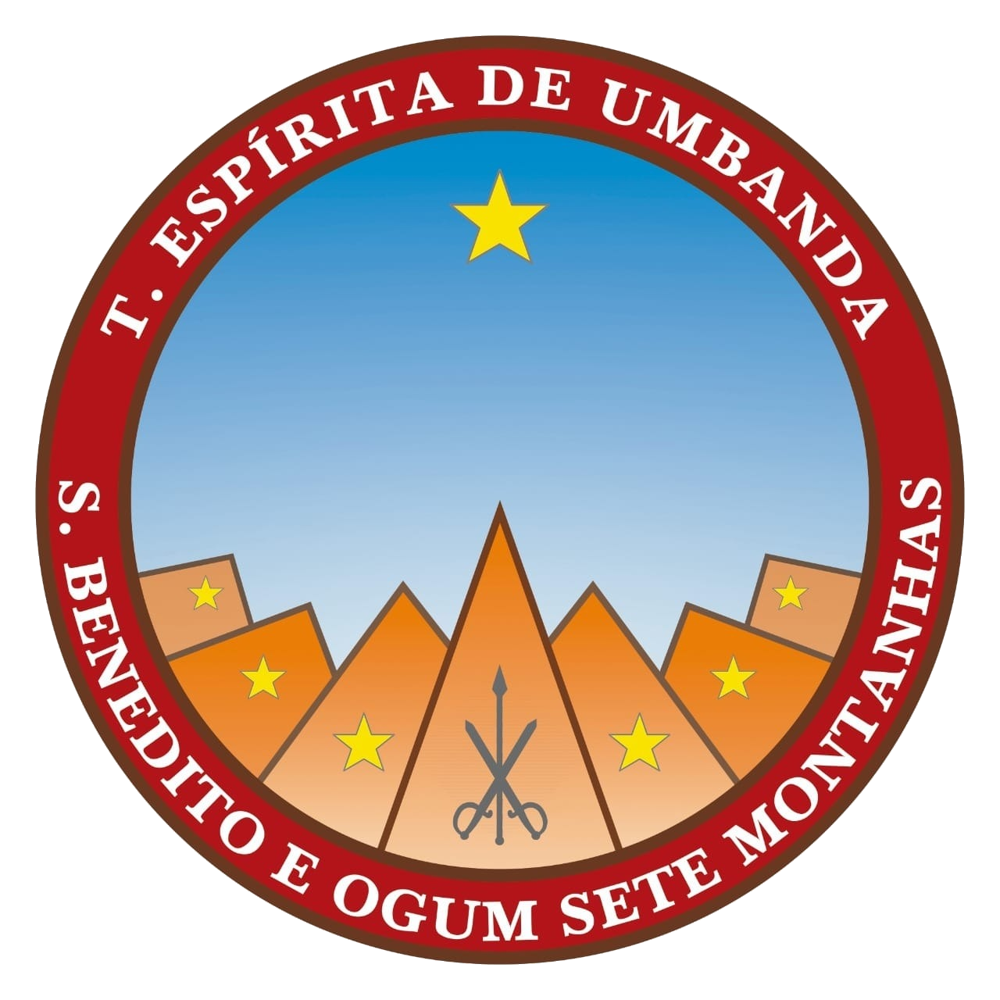

<div class="nav">
  <mat-toolbar color="primary">
    <mat-toolbar-row>
      <button mat-button (click)="opened=!opened">
        <mat-icon>menu</mat-icon>
      </button>
      
      <span>T. E. Umbanda São Benedito e Ogum Sete Montanhas</span>
    </mat-toolbar-row>
  </mat-toolbar>
  <mat-sidenav-container class="sidenav-container">
    <mat-sidenav [(opened)]="opened" mode="over" #sidenav class="sidenav">
      <mat-nav-list>
        <a mat-list-item routerLink="/home">Bem-Vindos</a>
        <a mat-list-item routerLink="/">Nossa História</a>
        <a mat-list-item routerLink="/dirigentes">Nossos Dirigentes</a>
        <a mat-list-item routerLink="/">Orientações</a>
        <a mat-list-item routerLink="/calendario">Calendário</a>
        <a mat-list-item routerLink="/">Contato</a>
      </mat-nav-list>
    </mat-sidenav>
    <mat-sidenav-content>
      <router-outlet></router-outlet>
    </mat-sidenav-content>
  </mat-sidenav-container>
</div>
